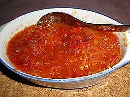

Sambal Ayam Goreng Kalasan

Bahan:
- 10 buah cabai merah, buang bijinya lalu direbus sebentar
- 1 buah tomat, direbus
- 6 buah bawang merah kecil
- 50 cc air kaldu ayam
- 3 sdt gula jawa
- ½ sdt garam
- 3 sdm minyak sayur
Cara Membuat:
- Ulek/haluskan cabai merah, tomat dan bawang merah.
- Panaskan minyak goreng dalam wajan dengan api sedang lalu tumis
bumbu yang sudah dihaluskan, beri gula dan garam.
- Masukkan kaldu ayam, masak di atas api kecil sampai keluar
minyak.
- Angkat, hidangkan sebagai pendamping Ayam Goreng Kalasan.